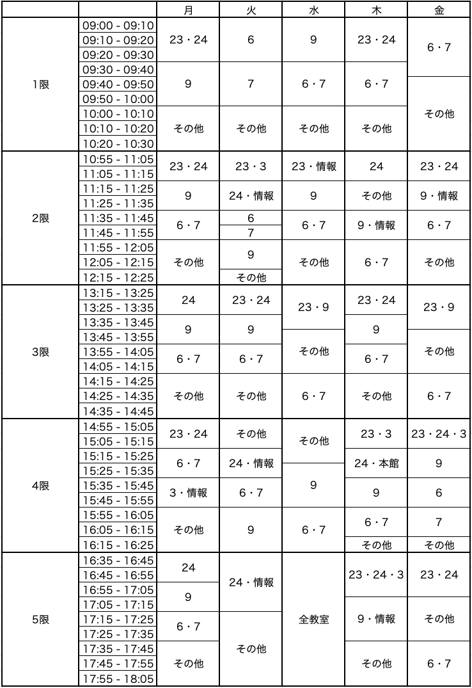

新入生用ページ | 学生用ページ | Q & A（学生用）
（更新日：2020年4月27日）
WebClassへのアクセス制限について
WebClass への負荷集中を回避し，円滑な授業運営を行うために，WebClassアクセスルール を作成しました．必ずこのルールを守ってください．
-
自分が出席している授業においては，教室ごとにアクセス可能時間帯が割り当てられています．授業の担当教員の指示に従い，許可があった時間帯のみWebClassにアクセスするようにしてください．
-
それ以外の授業時間帯（月〜金，9:00〜18:05）は，教員，学生ともに WebClassへのアクセスを禁止 します．
-
授業時間以外の時間帯においては，学科ごとに，以下に示す アクセス禁止時間帯 があります．課題の提出や授業資料のダウンロード等は，これらの時間帯を避けて行ってください．
-
アクセス可能時間帯であっても，WebClassにつながりにくい状況が発生する可能性があります．その場合は，何度も続けざまにアクセスを試みることをせずに，しばらく時間を置いてから，再度アクセスするようにしてください．
アクセス禁止時間帯
- 以下は アクセス禁止 時間帯です．ここに示した時間帯にはアクセスしないようにしてください．課題の提出等，時間に十分な余裕を見て，計画的に行ってください．
「なし」と書かれた曜日は，一日中アクセス可能です．
国際英語学科，人文学科・英語文学文化専攻
- 月： 8:30 – 18:30
- 火〜金： 8:30 – 23:59
- 土： なし
- 日： 13:30 – 23:59
人文学科（英語文学文化専攻を除く）
（哲学専攻，日本文学専攻，歴史文化専攻，史学専攻）
- 月： 8:30 – 23:59
- 火： 8:30 – 18:30
- 水〜金： 8:30 – 23:59
- 土： なし
- 日： 13:30 – 23:59
国際社会学科
（国際関係専攻，経済学専攻，社会学専攻，コミュニティ構想専攻）
- 月，火： 8:30 – 23:59
- 水： 8:30 – 18:30
- 木，金： 8:30 – 23:59
- 土： 13:30 – 23:59
- 日： なし
心理・コミュニケーション学科，人間科学科
（心理学専攻，コミュニケーション専攻，言語科学専攻）
- 月〜水： 8:30 – 23:59
- 木： 8:30 – 18:30
- 金： 8:30 – 23:59
- 土： 13:30 – 23:59
- 日： なし
数理科学科
（数学専攻，情報理学専攻）
- 月： 8:30 – 18:30
- 火〜金： 8:30 – 23:59
- 土： なし
- 日： 13:30 – 23:59
大学院人間科学研究科，理学研究科
- 月： 8:30 – 18:30
- 火，水： 8:30 – 23:59
- 木，金： 8:30 – 18:30
- 土： なし
- 日： なし
参考：授業時間内のアクセス可能時間帯
- 曜日・時限・教室ごとにアクセス可能時間帯が決まっています．参考にしてください．
- 表の中の番号は教室のある建物を表します．例えば「24」は24号館のことです．表の中に該当教室がない場合は，「その他」の時間帯がアクセス可能時間帯になります．
